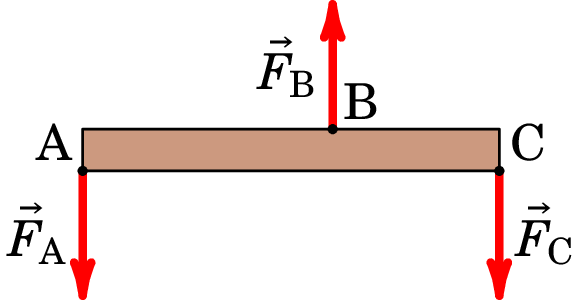
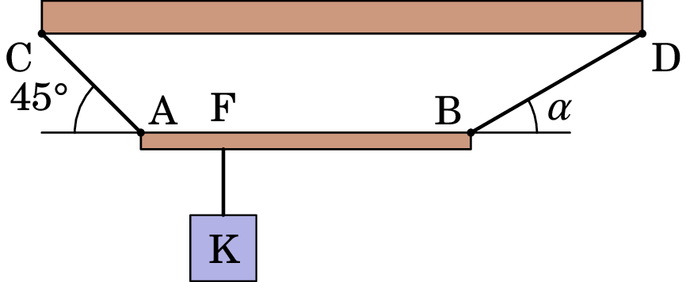
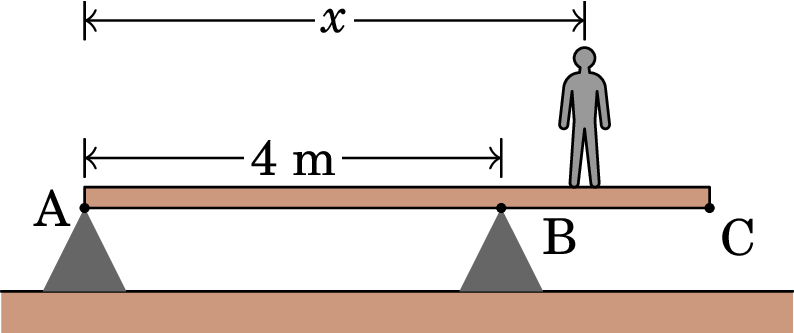
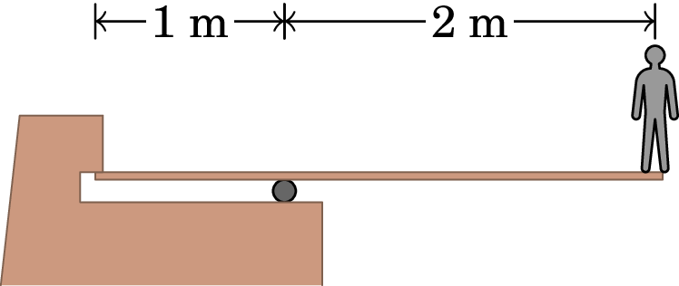
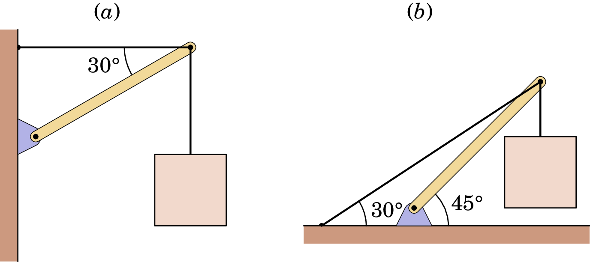
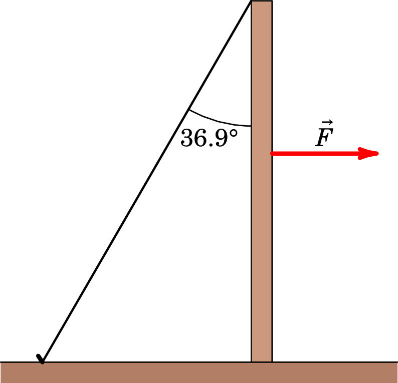

Jaime E. Villate. Problemas de Mecânica,
University of Porto, Portugal, 2025.
Os problemas identificados com um único número foram retirados da Terceira Folha Complementar de Problemas do Professor Paulo Sá. Os problemas com número a começar por "11." foram retirados do livro: Young & Freedman (2016). Física I. 14ª edição, São Paulo, Brasil: Pearson Education do Brasil Ltda.
Respostas obtidas admitindo m/s2.
18. A barra AC, de comprimento 1 m, está sob a ação de três forças verticais, como se indica no esquema da figura abaixo. Sabendo que a distância AB é 0.6 m, os módulos das 3 forças são N, N, N, e supondo desprezável o peso da barra, calcule a força que se deve exercer sobre a barra, para que esta fique em equilíbrio, bem como o seu ponto de aplicação.

N, vertical e para cima, a 0.5 m do ponto A19. A viga homogénea AB, representada na figura abaixo, de massa igual a 18 kg e comprimento 2 m, está suspensa horizontalmente, ligada a uma trave de sustentação (CD) por meio de dois cabos, AC e BD. Do ponto F da viga, situado a 0.5 m do ponto A, está suspenso o corpo K, com massa de 10 kg. O conjunto viga AB, corpo K e cabos de sustentação encontra-se em equilíbrio estático. Considere que os cabos AC e BD têm massas desprezáveis.

20. Um docente do MIEQ, de massa 80 kg, caminha sobre uma barra homogénea AC de massa 10 kg e comprimento 6 m. A barra está apoiada sobre dois pontos situados em A e B que distam entre si 4 m, conforme representado na figura, podendo rodar em torno do ponto B:

11.11. Uma prancha de trampolim com 3 m de comprimento é suportada num ponto situado a 1 m de uma de suas extremidades, e um mergulhador que pesa 500 N está em pé na outra extremidade (ver figura). A prancha possui secção reta uniforme e pesa 280 N. Calcule (a) a força exercida sobre o ponto de suporte; (b) a força na extremidade esquerda.

(a) 1920 N (b) 1140 N11.13. Determine a tensão em cada cabo e o módulo, a direção e o sentido da força exercida sobre a viga pelo pivô em cada um dos arranjos indicados na figura. Em cada caso, seja o peso da caixa suspensa, cheia de objetos de arte. A viga de suporte é uniforme e também possui peso . Comece cada caso com um diagrama do corpo livre para a viga.

(a) ; , 37.6° por cima da horizontal. (b) ; , 48.8° por cima da horizontal.11.90. A extremidade de um poste, de peso igual a 400 N e altura , está apoiada sobre uma superfície horizontal; o coeficiente de atrito estático entre o poste e a superfície horizontal é . A extremidade superior do poste está sustentada por uma corda amarrada à superfície horizontal e fazendo um ângulo de 36.9° com o poste (ver figura). Uma força horizontal é aplicada sobre o poste conforme indicado.
